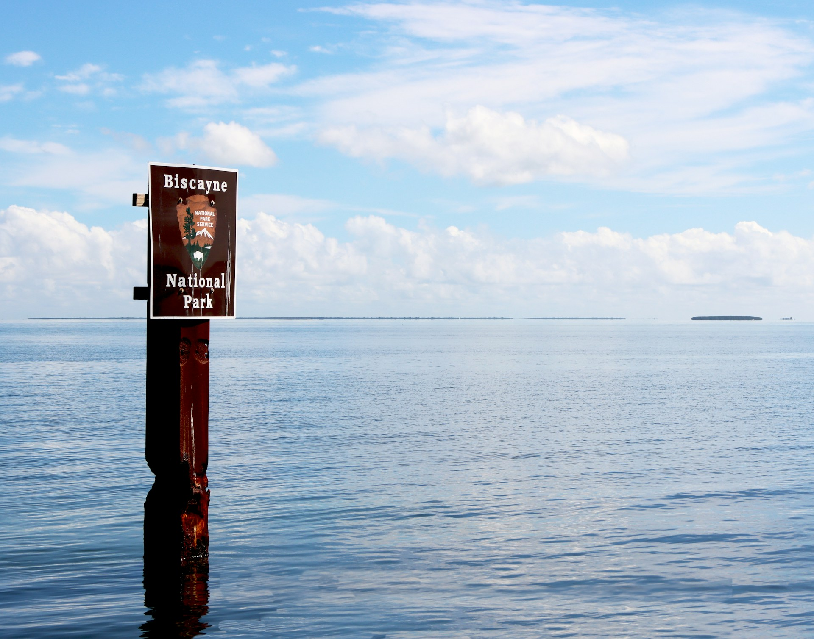
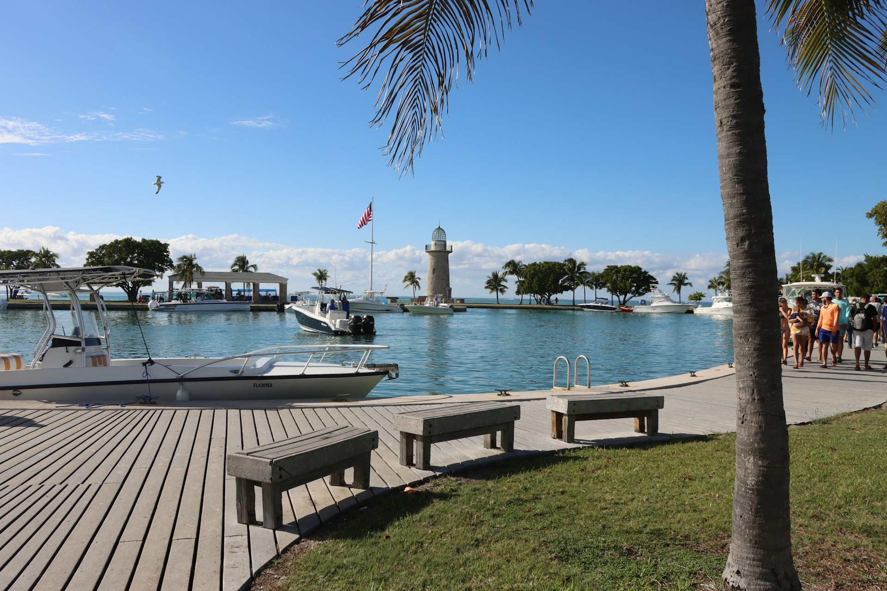
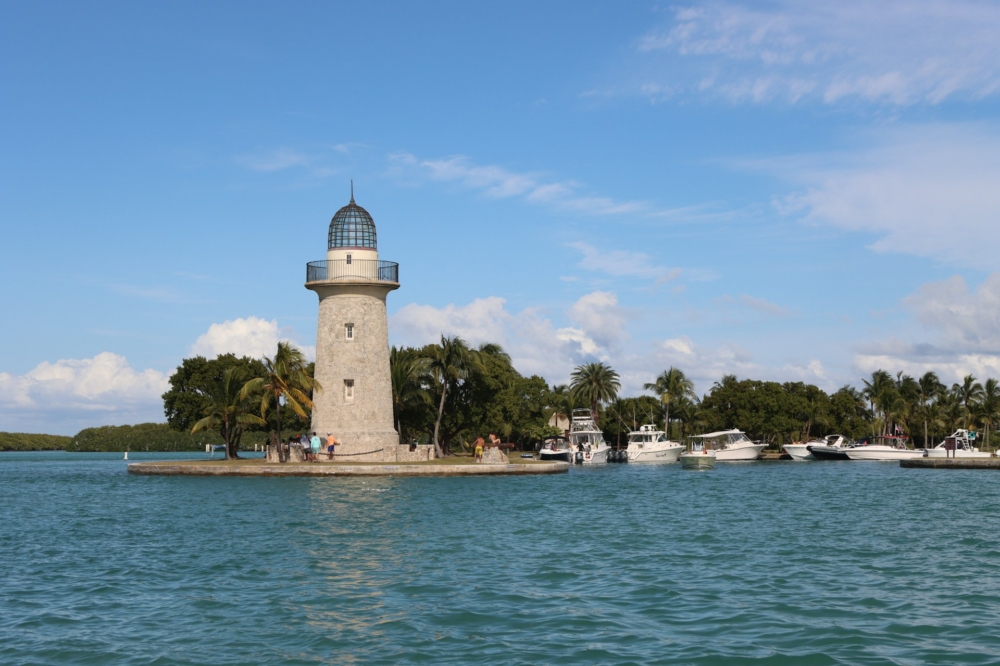
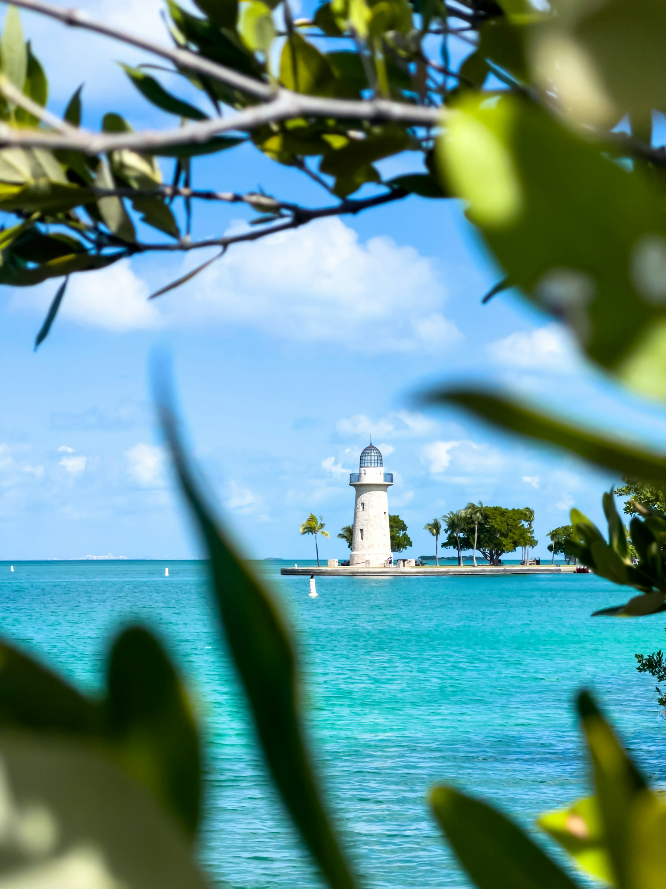
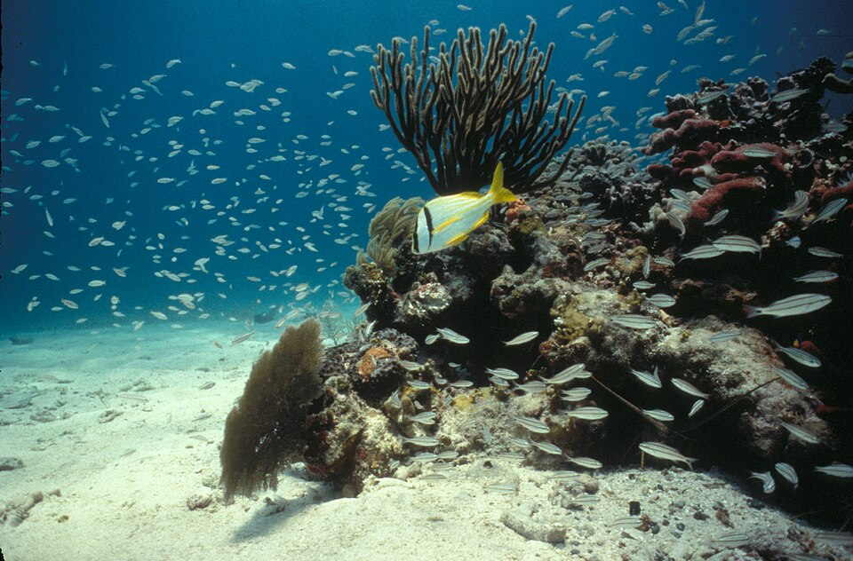
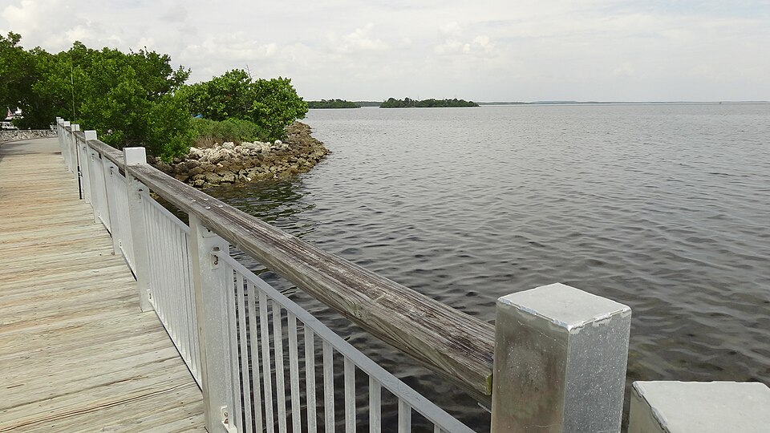
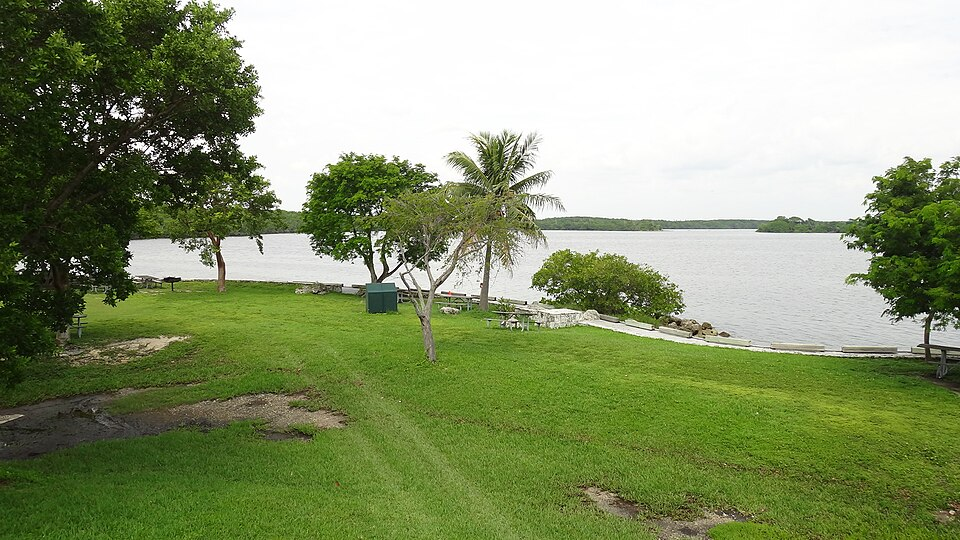
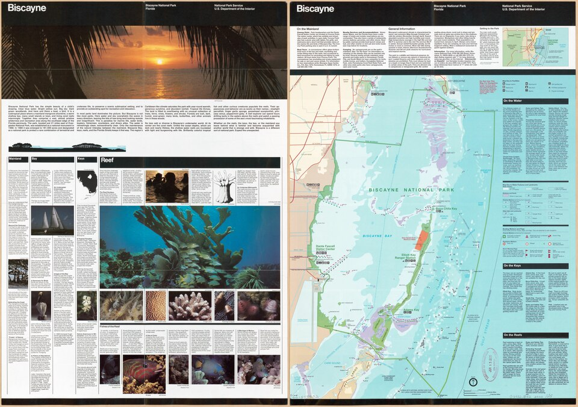
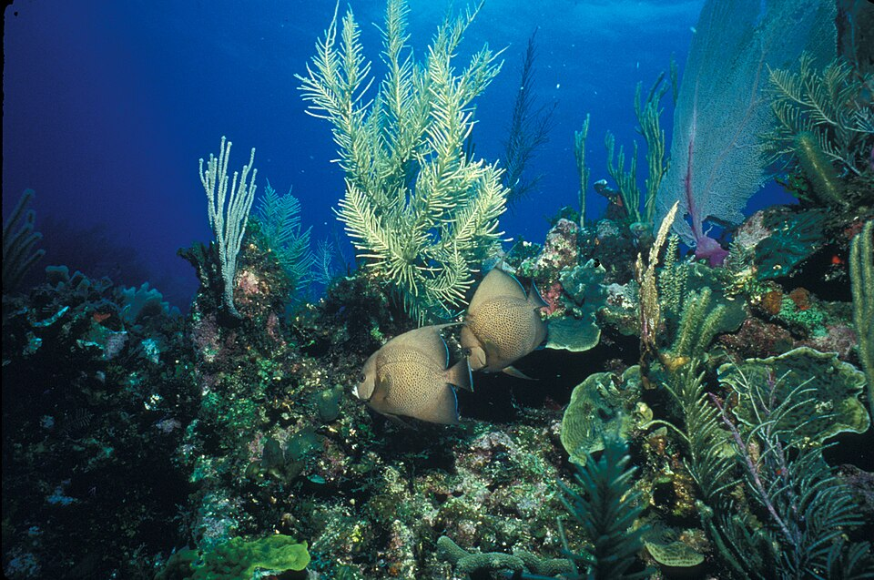
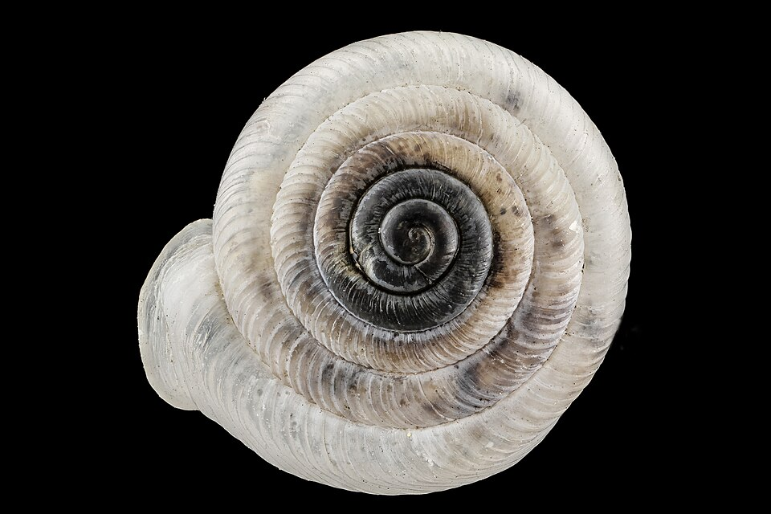

Biscayne National Park
El parque nacional más acuático del país. 95% agua. A 45 minutos de Miami. The most aquatic national park in the country. 95% water. 45 minutes from Miami.
Bajo las aguas transparentes de Biscayne Bay, los manglares tienen raíces que se doblan como dedos buscando el fondo. Un manatí pasa despacio. Un delfín nada a tu lado. El 95% del parque es agua — y esa agua es el ecosistema más frágil y más hermoso que encontrarás a 45 minutos de Miami.
Under the clear waters of Biscayne Bay, mangrove roots bend like fingers reaching for the bottom. A manatee drifts past. A dolphin swims alongside. 95% of the park is water — and that water is the most fragile and beautiful ecosystem you'll find 45 minutes from Miami.
acres del parque son agua, bahía, arrecife de coral y ecosistemas de manglares — el 95%
acres of the park are water, bay, coral reef and mangrove ecosystems — 95%
Galería
Gallery









¿Qué sabes de Biscayne National Park? What do you know about Biscayne National Park?
5 preguntas · 2 minutos · Aprende algo nuevo 5 questions · 2 minutes · Learn something new
¿Qué puedes hacer aquí? What can you do here?
Snorkel y Buceo Snorkeling & Diving
- Snorkel en bahía superficial (~1–4m) Shallow bay snorkeling (~1–4m)
- Maritime Heritage Trail — 9 naufragios Maritime Heritage Trail — 9 shipwrecks
- Visibilidad 15–25m en temporada seca 15–25m visibility in dry season
- Alquiler de equipo en Visitor Center Equipment rental at Visitor Center
Kayak / Paddleboard Kayak / Paddleboard
- Elliot Key — 9 millas de la costa Elliot Key — 9 miles offshore
- Adams Key — área de picnic accesible Adams Key — accessible picnic area
- Ruta entre manglares de la costa Coastal mangrove route
- Alquiler en Convoy Point Visitor Center Rental at Convoy Point Visitor Center
Tours en Bote Boat Tours
- Island Discovery Cruise — 3 horas Island Discovery Cruise — 3 hours
- Reef Snorkel Tour — media jornada Reef Snorkel Tour — half day
- Sunset Cruise disponible Sunset Cruise available
- Reserva en el Visitor Center Reserve at Visitor Center
Fauna Marina Marine Wildlife
- Manatíes — frecuentes en la bahía Manatees — frequent in the bay
- Delfines nariz de botella Bottlenose dolphins
- Tortugas marinas (mayo–oct) Sea turtles in season (May–Oct)
- +550 especies de peces 550+ fish species
Antes de ir — lo que necesitas saber Before you go — what you need to know
🎒 Qué llevar What to bring
- 🤿 Equipo snorkel o alquílalo en el parque 🤿 Snorkel gear or rent it
- ☀️ Protector solar mineral ☀️ Mineral sunscreen
- 💧 Agua abundante — no hay tiendas en islas 💧 Plenty of water — no stores on islands
- 🚤 Si reservas tour, llega 30 min antes 🚤 If booking tour, arrive 30 min early
- 📸 Cámara acuática 📸 Waterproof camera
- 🎒 Chaleco salvavidas (incluido en tours) 🎒 Life jacket (included in tours)
⚠️ Reglas importantes Important rules
- 🪸 No tocar el coral ni los naufragios 🪸 Don't touch coral or shipwrecks
- 🚫 Protector solar con oxibenzona prohibido 🚫 Oxybenzone sunscreen prohibited
- ⚓ Anclar en zona de arrecife: multa federal ⚓ Anchoring in reef zone: federal fine
- 🚤 Respeta zonas de manatíes 🚤 Respect manatee zones
- 📵 Sin señal en islas alejadas 📵 No signal on remote islands
📅 Cuándo ir When to go
Información práctica Practical information
Entrada Entry fee
Gratis Free Tours en bote tienen costo adicional ($35–$60) Boat tours have additional cost ($35–$60)Horarios Hours
7am–5:30pm Visitor Center · islas accesibles todo el año Visitor Center · islands accessible year-roundCómo llegar Getting there
~45min desde Miami ~45min from Miami SW 328th St, Homestead · sin transporte públicoMejor época Best season
Nov – Abr Visibilidad máx · manatíes activos Max visibility · manatees activeTip local Local tip
La entrada es gratis pero sin bote o tour, no llegas a los mejores spots. Reserva el tour 'Reef Snorkel' con días de anticipación — es lo más solicitado. Entry is free but without a boat or tour, you won't reach the best spots. Book the Reef Snorkel tour days ahead — it's the most requested.Miles de visitantes acceden a esta guía cada mes Thousands of visitors access this guide every month
Tours en bote, alquiler de kayaks, operadores de buceo, guías de pesca — si tu negocio está en el área de Biscayne, tus clientes ya están aquí buscándote. Boat tours, kayak rentals, diving operators, fishing guides — if your business is in the Biscayne area, your customers are already here.